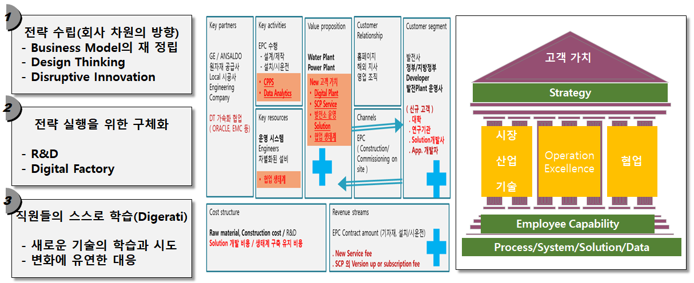

고객 가치와 기업 가치에 집중하여 일하는 방식이 완전히 달라진 회사, 그것을 위한
디지털 변화 전략을 어떻게 준비할 것인가 ?

새로운 방식의 프로세스, 시스템 및 솔루션은 Open source, CLOUD, API Economy를 적극 활용하여,
직원들이 맘껏 창의성과 역량을 발휘할 수 있도록 자유롭게 하는 것이다.
직원들이 통계분석, Machine Learnig, Open source R 로 데이터를 자유롭게 분석할 수 있다면
많은 부분에서 경쟁력이 달라지게 될 것이며, 이 일은 직원들 스스로 학습으로 가능하다.
향후 3년 후 경쟁력의 구도를 파괴할 Disruptive Innovator들은 지금 무엇을 하고있을까를 생각하며,
회사와 직원들의 스스로 학습을 위하여 이 web이 흐르는 강물처럼 이어졌으면... 하는 바램이다.
앞으로의 핵심 경쟁력은 사업모델의 변화에 얼마나 신속하게 내부의 프로세스, 시스템이 빠르게 대응하고
직원들이 외부의 새로운 기술을 습득하게 하고 자유롭게 활용할 수 있게 하는 내부의 일하는 방식이 될 것이다.
사업모델에 따라 신규사업을 할 경우 거기에 필요한 프로세스와 시스템을 새롭게 구축하면서 시간을 지체 할 것인가 ?
계속 생성되는 데이터를 활용하여 새로운 부가가치를 위해 이전 처럼 체계적으로 정비를 하면서 시간을 보내고 있을 것인가 ?
내부의 이슈와 Risk 관리를 위한 좋은 해결 방안이 외부에 있음에도 찾지 못하거나 협업하는 방식이 어렵다면
어떻게 경쟁력을 유지하나 ?
프로세스, 시스템, 솔루션, 데이터 분석 및 디지털 활용에 대한 직원역량에 대하여
기업이 추구하는 전략과 연계하여 관련 사항들을 효과적으로 연계하고 쉽게 사용할 수 있도록 방향을 제시하고 데이터를 기반으로 제시하고자 한다.
일하는 방식을 효율적으로..
필요한 물건이 정해졌다면 그 다음의 일은 아주 손쉬어야 한다. 적합한 업체를 찾거나, 적절한 가격인지 판단하고
예산의 여부와 내부 승인 절차는 인터넷에서 생활용품 구입하듯이 아무런 불편이 없고 직관적이어야 한다.
제품 설계 시에는 필요한 기술과 유사한 제품에 관한 최신 정보를 찾아내어 손쉽게 활용하고, 외부의 관련 전문가를 찾아서
관련 내용을 공유하고 협업을 친구와 카톡하듯이 하면서도 회사 보안을 유지할 수 있는 업무 프로세스가 필요하다.
새로운 사업이나 제품으로 인하여 내부의 프로세스를 변경할 때 시스템의 구축이나 변경에 시간이 많이 소요되지 않고 레고 블록
쌓듯이 새로운 사업에 맞는 업무 절차가 정해지면, 시스템이 즉시 반응하는 유연한 시스템이 경쟁력이다.
외부에서 AI, Machine Learning과 같이 새로운 좋은 기술이 나타나면 즉시 내부에 그것을 활용할 수 있는 직원들의 수용성을
위해 상시 직원들이 새로운 것에 대한 스스로 학습이 가능한 체계가 필요하다.
새로운 것을 받아 들이는 직원들의 학습 체계 일하는 방식과 데이터 그리고 디지털 기술들
중요한 것은 사업 모델이며 어떻게 가능하게 할 것인가 이지 그 것을 꼭 내부에 만들 필요는 없다 : 지금 기업에서 혁신의 핵심은 얼마나 최고의 프로세스를 구축하는 것이 아니라 기업은 지속적으로 프로세를 손쉽게 변화시킬 수 있으며,
직원들이 자유롭게 외부의 자원을 활용하거나 협업이 가능하도록 디지털 기술을 능숙하게 다룰 수 있도록 하는 것이다.
그것을 실행할 프로세스, 데이터, 솔루션 그리고 내부 역량의 준비에 대하여 :
지금 디지털 기술의 핵심 중의 하나는 데이터를 얼마나 직원들이 Machine learning, AI 및 통계 솔루션으로 다루어 현재의 문제점을 파악하거나
새로운 방식에 대한 결과를 사전에 해석할 수 있는 역량이다.
결국, 현재 기업의 역량은 프로세스의 유연성, 일회성 혁신이 아닌 외부 변화에 신속한 대응이 가능한 지속적인 혁신과 직원들의
데이터를 기반으로 하는 디지털 활용 역량이 될 것이다.
외부 자원의 손쉬운 활용과 외부변화에 신속한 대응의 업무 환경
핵심은 고객에게 제공하는 제품/서비스 자체와 그 것을 전달하는 방식이지 얼마나 내부 시스템이 독특한 지는 중요하지 않다.
지금의 디지털 기술, Open source, CLOUD를 이용하면 내부에 구축하는 것이 아닌 최적의 것을 빌려서 사용하면 되는 시대이다.
외부의 좋은 기술을 경쟁자보다 빠르게 내부에 적용하거나 외부와 협력을 효과적으로 할 수 것이 경쟁력이고,
그 것을 가능케 하는 프로세스, 시스템, 데이터 활용, 직원들의 역량을 갖추어야 한다.
Digerati 인재 육성 : API Economy를 이해하고 Open source, CLOUD 활용하여 자신의 업무에 스스로 활용할 수 있는 직원들이
필요하며 그들이 그 것을 자유롭게 할 수 있도록 하게해야 한다.
 Image source
Image source